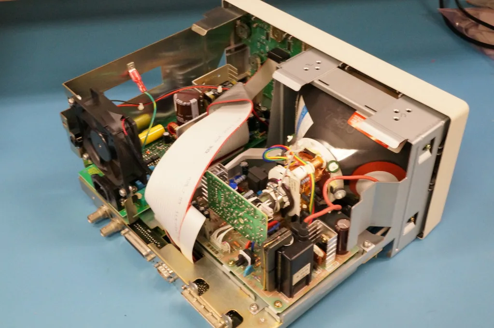
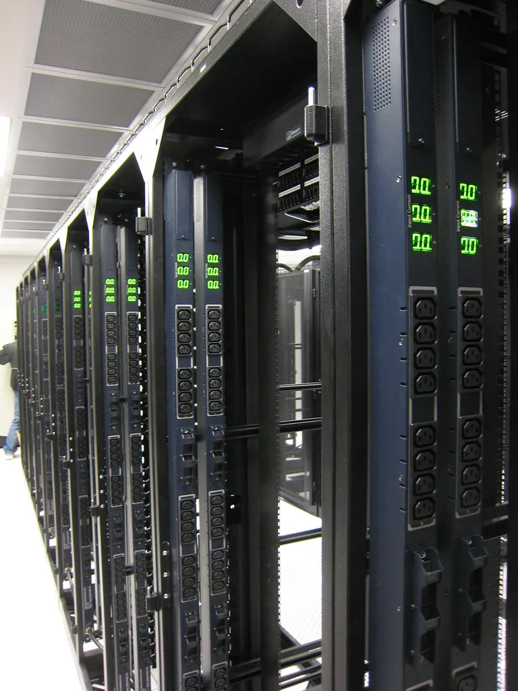

엔비디아가 오는 9일부터 10일까지 서울 삼성동 코엑스에서 'AI 데이 서울 2026'을 개최한다. 에이전틱 AI와 피지컬 AI, 최신 AI 인프라 기술을 조망하는 이번 행사에는 약 2000명의 개발자와 스타트업 관계자, 협력사, 연구자 등이 참석할 것으로 예상된다. 국내에서 열리는 엔비디아의 대표 행사답게, 행사 개막 전부터 업계 관계자들의 참석 신청과 관심이 뜨겁게 이어지고 있다.
행사에는 삼성전자와 SK하이닉스, LG전자, 두산로보틱스 등 국내 주요 기업들이 엔비디아 플랫폼을 활용한 기술 적용 사례를 발표하며 함께한다. 삼성전자는 엔비디아의 물리 기반 AI 개발 도구 '피직스네모(PhysicsNeMo)'를 활용해 유체·열·구조 해석을 가속하고 설계 탐색 과정을 자동화하는 기술을 소개할 예정이다. SK하이닉스는 엔비디아의 'CUDA-X'와 피직스네모를 접목해 반도체 소자 및 공정 시뮬레이션의 효율을 높이는 방안을 공유한다. 두 회사 모두 설계와 공정 단계에 AI 시뮬레이션을 접목해 개발 기간을 단축하려는 시도를 구체적인 사례로 보여줄 것으로 전해졌다.

프로그램 구성도 다채롭다. 조나단 코헨 엔비디아 응용 연구 부문 부사장이 에이전틱 AI를 주제로 발표를 맡고, 정구형 엔비디아 솔루션 아키텍트 팀 매니저와 제시 클레이튼 엔비디아 AI 인프라 부문 수석 프로덕트 마케팅 매니저는 AI 팩토리 청사진과 엔비디아의 'DSX' 생태계를 소개할 계획이다. 엔비디아 젠슨 황 최고경영자(CEO)도 행사에 참석하는 것으로 알려지면서, 국내 AI·반도체 업계 전반의 관심이 집중되고 있다. 이틀간 이어지는 세션에는 기업 발표 외에도 실제 개발 현장에서 활용 가능한 기술 데모와 네트워킹 프로그램도 함께 마련될 예정이다.
당초 젠슨 황 CEO의 장녀인 매디슨 황 수석이사도 8일 방한해 행사에 함께할 예정이었으나, 방한을 하루 앞두고 한국 방문 일정이 전격 취소됐다. 취소 배경에 대해서는 명확히 확인된 설명이 아직 나오지 않았으며, 행사 전체 일정과 프로그램에는 변동이 없다고 주최 측은 밝혔다. 그간 매디슨 황 수석이사가 아버지와 함께 주요 행사에 동행해온 사례가 많았던 터라, 이번 방한 취소를 둘러싼 업계의 궁금증은 쉽게 가라앉지 않고 있다.

이번 행사는 국내 기업들이 엔비디아와 맺어온 협력 관계를 재확인하는 자리이기도 하다. 삼성전자와 SK하이닉스는 그동안 엔비디아의 차세대 GPU용 고대역폭메모리(HBM) 공급을 두고 긴밀히 협력해왔으며, 네이버클라우드와 SK텔레콤, 쿠팡 인텔리전스 클라우드 등도 AI 모델 개발과 데이터센터 운영 노하우를 공유할 예정인 것으로 전해진다. 반도체부터 로봇, 데이터센터에 이르는 폭넓은 산업 영역에서 엔비디아 생태계가 국내에 얼마나 깊이 뿌리내렸는지를 보여주는 행사라는 평가가 나온다.
업계에서는 이번 행사를 계기로 국내 기업들의 AI 인프라 투자와 관련 기술 협력이 한층 가속화될 것으로 내다보고 있다. 특히 피지컬 AI와 로봇 분야에서의 실증 사례가 다수 공개될 것으로 예상되는 만큼, 제조업 전반에 AI 기술이 어떻게 접목될지에 대한 구체적인 청사진이 제시될지 주목된다. 최근 글로벌 증시에서 AI 데이터센터 투자 과속에 대한 경고와 규제 우려가 동시에 제기되고 있는 만큼, 이번 행사가 국내 기업들의 AI 투자 전략에 어떤 메시지를 던질지도 함께 관심을 모으고 있다.